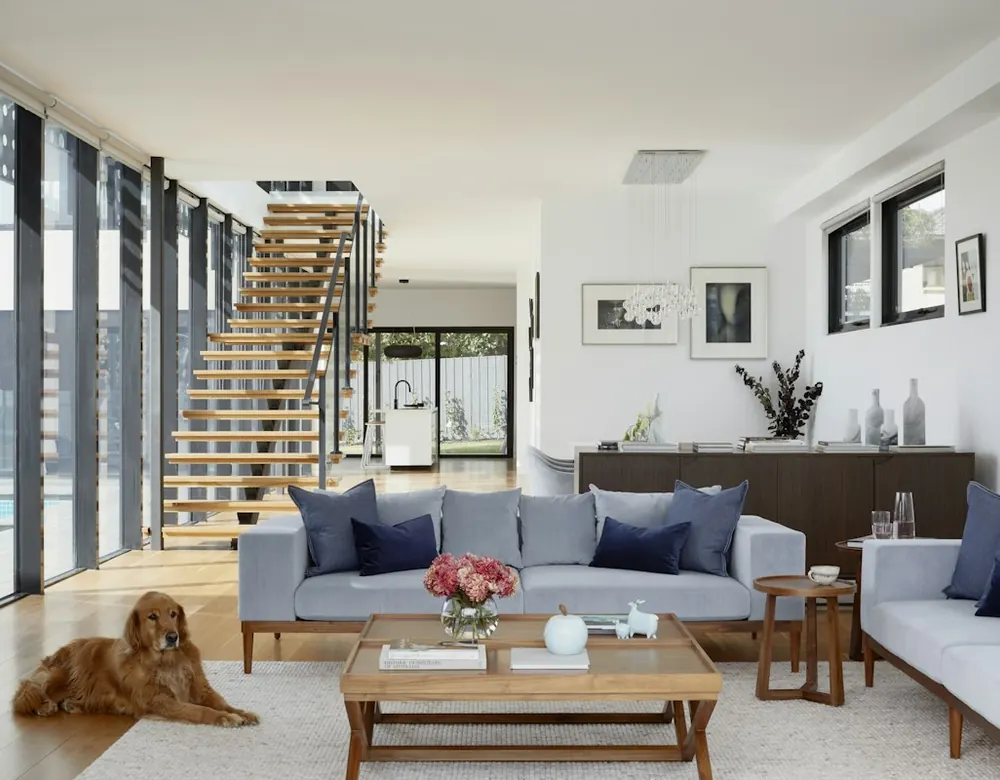

Aide ménagère à domicile
Entretien courant du logement : poussières, sols, sanitaires, cuisine, surfaces et tâches convenues au devis.
Découvrir le ménage à domicile →Net Elo – Élodie Massin E.I.
Vous recherchez une femme de ménage à Clermont ? Net Elo propose un service d’aide ménagère et de ménage à domicile fiable, soigné et adapté à vos besoins.

*Selon la réglementation fiscale en vigueur et les conditions applicables au client.
Mes services
Entretien courant du logement : poussières, sols, sanitaires, cuisine, surfaces et tâches convenues au devis.
Découvrir le ménage à domicile →
Vitres, fenêtres, baies et surfaces vitrées accessibles, avec matériel professionnel adapté.
Découvrir le lavage de vitres →
Nettoyage régulier ou ponctuel, organisé selon vos besoins et votre rythme de vie.
Découvrir l’entretien du domicile →Tarifs indicatifs
À Clermont et dans les alentours proches : 25 € / heure. Hors de ce secteur : 30 € / heure lorsque l’intervention est réalisable. Les jours fériés, le tarif horaire applicable est majoré de 5 € / heure. Chaque prestation fait l’objet d’un devis personnalisé avant intervention.
Zone d’intervention autour de Clermont →
Inclus : frais de déplacement, matériel et produits standards.
Ce qui est inclus
Toute intervention reste soumise à l’accessibilité des surfaces, aux conditions de sécurité et au devis établi au préalable.

À propos de Net Elo
Je suis Élodie Massin. J’ai commencé dans les métiers de la propreté à 18 ans, d’abord dans un environnement industriel du secteur ferroviaire dans le Nord. Depuis, mon parcours m’a conduite à intervenir dans des bureaux, magasins, usines, entreprises, cabinets médicaux et chez des particuliers.
Au fil des années, j’ai développé une pratique complète du nettoyage manuel et mécanisé : monobrosse, autolaveuse autotractée ou autoportée, lavage de vitres et organisation de prestations de propreté. Je suis notamment formée comme agent machiniste classique et chef d’équipe propreté, avec également des formations de secourisme ainsi que gestes et postures.
J’ai également été associée d’une société spécialisée dans la propreté, au sein de laquelle j’ai été très active sur le terrain comme dans l’organisation de l’activité : plannings, livraison de produits et matériels, contrôles, recrutement, formation des équipes et suivi administratif.
Aujourd’hui, je travaille seule auprès de mes clients particuliers : vous savez qui intervient chez vous. Ponctualité, sérieux, discrétion et souci du détail guident mon travail au quotidien.
Comment ça se passe ?
Appelez ou écrivez pour expliquer vos besoins.
Une proposition claire et sans engagement.
La prestation est réalisée à la fréquence convenue.
Le service peut évoluer selon vos besoins.
Avis Google
Net Elo est noté 5/5 sur Google avec 22 avis au dernier contrôle. Consultez directement les avis publiés sur la fiche Google ou partagez votre expérience après une intervention.
Les avis restent consultés et déposés directement sur Google ; aucun témoignage n’est inventé sur ce site.
Clermont et alentours
Net Elo intervient à Clermont et étudie les demandes dans les communes proches, notamment Agnetz, Fitz-James, Breuil-le-Sec et Breuil-le-Vert. Chaque adresse est vérifiée selon la prestation, le planning et les possibilités de déplacement.
Vérifier ma commune →Un besoin à domicile ?
Demande de devis pour Clermont et les alentours proches.